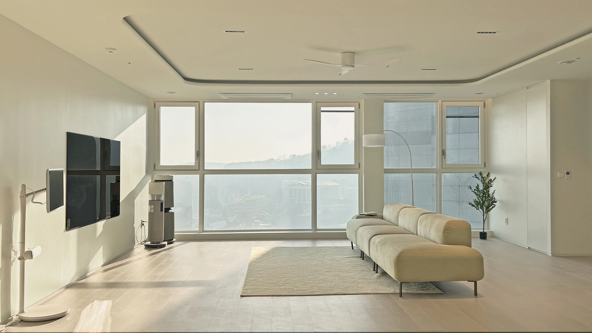
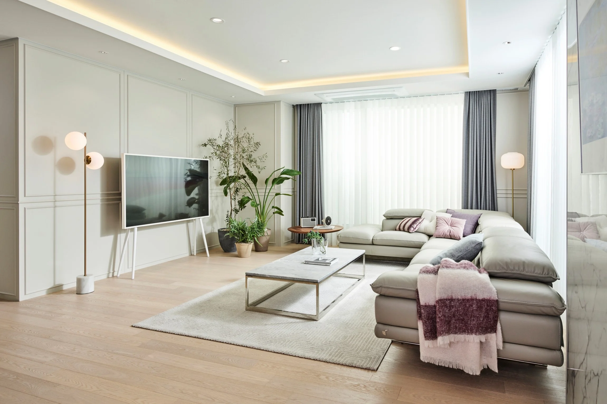
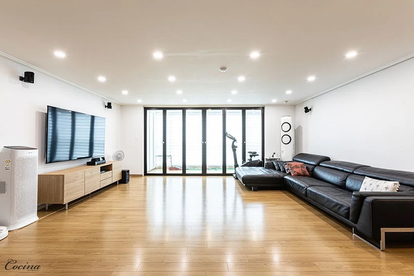

거실
14평작아도 답답하지 않은 14평 가구 배치
 전후 비교
전후 비교30년 된 아파트, 벽 하나를 없앤 결과
 컬러
컬러베이지와 청록, 차분하지만 심심하지 않게
 도와주세요
도와주세요이 벽면에 수납장, 깊이 40cm면 충분할까요?

주방주방과 거실을 이어주는 긴 원목 식탁
인기화이트 거실이 차갑지 않게 보이는 세 가지
수납
실제 집들이부터 셀프 인테리어 질문까지
생활하는 사람들의 경험을 모았습니다.

거실
14평전후 비교컬러도와주세요
주방인기거실의 중심을 비우고 창가 동선을 살렸습니다. 사용한 가구와 자재, 실제 비용 정보를 댓글에서 확인할 수 있습니다.